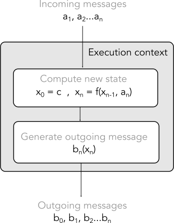

Statements, messages and reducers
Common advice when improving the design of a program is to break the programs into small isolated units of functionality so that we can consider the behavior within each component separately to the connections between components.
If that’s the only advice you’re given though, it can be difficult to work out how to apply it in practice.
In this article, I’ll show how this advice can be followed through the simple evolution of a piece of code, arriving at a pattern that is common in concurrent programming (but is useful across most stateful programs) where we build our program from three different tiers of computational unit: “statements”, “messages” and “reducers”.
You can download this article as a Swift Playground from github.
Aim
The purpose of this article is to show how to isolate state in your program. There are a number of reasons why we might want to do this:
- If containment is clean, the behavior at a single location is easier to understand
- If containment is clean, it is easier to model and understand connections between components.
- If state is accessed at a single location, it is easy to move that location inside another execution context (like a queue, thread or simply within a mutex) and make your program threadsafe and asynchronous.
- If state can only be accessed in restricted ways, we can more carefully manage dependencies and keep everything up-to-date when dependencies change
A series of statements
A statement is the standard computational unit in an imperative programming language, like Swift. Statements include assigment, functions and control flow and may include effects (changes in state).
I know, I know, I’m explaining basic programming terminology to programmers; I’ll be brief.
Here’s a small program where the logic is built from statements:
func printCode(_ code: Int) {
if let scalar = UnicodeScalar(code) {
print(scalar)
} else {
print("�")
}
}
let grinning = 0x1f600
printCode(grinning)
let rollingOnTheFloorLaughing = 0x1f600
printCode(rollingOnTheFloorLaughing)
let notAValidScalar = 0x999999
printCode(notAValidScalar)
let smirkingFace = 0x1f60f
printCode(smirkingFace)
let stuckOutTongueClosedEyes = 0x1f61d
printCode(stuckOutTongueClosedEyes)This will print each of the following on their own line: 😀 🤣 � 😏 😝
The boxed question mark character is not a mistake, the code deliberately prints the Unicode replacement character (0xfffd) on failure to convert to a UnicodeScalar.
Controlling our program through messages
The biggest problem with logic built purely from statements is that extending it with additional functionality is verbose. Looking for ways to eliminate verbosity naturally leads to code driven (at least in part) by data.
For example, driving the previous example through data reduces the last 10 lines down to 4:
let codes = [0x1f600, 0x1f923, 0x999999, 0x1f60f, 0x1f61d]
for c in codes {
printCode(c)
}However, this example is very simple and it might not be clear that it has really changed anything. We can increase the complexity of the example to make the difference clearer.
We’ll modify our array to replace the basic Int values with a type that needs a little more handling.
enum Instruction {
case print
case increment(Int)
case set(Int)
static func array(_ instrs: Instruction...) -> [Instruction] { return instrs }
}Now, instead of simply printing every Int value received, our handling requires maintaining an internal Int storage and different Instruction values may .set the storage, may .increment the storage or may request that the storage be .printed.
Let’s look at what code we might use to process the array of Instruction objects:
struct Interpreter {
var state: Int = 0
func printCode() {
if let scalar = UnicodeScalar(state) {
print(scalar)
} else {
print("�")
}
}
mutating func handleInstruction(_ instruction: Instruction) {
switch instruction {
case .print: printCode()
case .increment(let x): state += x
case .set(let x): state = x
}
}
}
var interpreter = Interpreter()
let instructions = Instruction.array(
.set(0x1f600), .print,
.increment(0x323), .print,
.increment(0x999999), .print,
.set(0x1f60f), .print,
.increment(0xe), .print
)
for i in instructions {
interpreter.handleInstruction(i)
}This code produces the same output as the previous example and uses a very similar printCode function internally but it should be clear that the Interpreter struct is running a little mini-program defined by the instructions array.
It should now be much clearer that our program’s logic is composed of logic on two different tiers:
- Swift statements in
handleInstructionandprintCodewhich interpret and execute each instruction - The
Instructions.arraywhich contains a sequence of messages that need to be interpreted
Our second tier of computational unit is the message and it is any data which can be fed to a component in a stream, where the structure of data in the stream itself determines the result.
Terminology note: I’m calling these instructions “messages”, following common terminology in process calculus and the actor model, but the term “commands” is also sometimes used. In some cases, these messages may also be treated as a complete “domain specific language”.
Structuring logic through component connections
The biggest problem with the previous code is that its structure does not aesthetically reflect the structure of the computation; it’s difficult to see at a glance what direction the logic flows.
We need to consider what the structure of the computation really is. We’re trying to:
- take a sequence of instructions
- convert those instructions into sequence of effects on our internal state
- emit further messages to a third stage that can
print
It is possible to identify parts of the Interpreter struct that perform these tasks but that struct is not aethetically organized to reflect these three steps.
So let’s refactor our code to something that directly shows the connection.
var state: Int = 0
Instruction.array(
.set(0x1f600), .print,
.increment(0x323), .print,
.increment(0x999999), .print,
.set(0x1f60f), .print,
.increment(0xe), .print
).flatMap { (i: Instruction) -> Int? in
switch i {
case .print: return state
case .increment(let x): state += x; return nil
case .set(let x): state = x; return nil
}
}.forEach { value in
if let scalar = UnicodeScalar(value) {
print(scalar)
} else {
print("�")
}
}Once again, the code will print the same output as previous examples.
We now have a three stage pipeline that directly reflects the 3 points above: a sequence of instructions, interpreting instructions and applying state effects, and the output phase.
Reducers
Let’s look in particular at the flatMap stage in the middle of our pipeline. Why is it the most important?
It’s not because of the flatMap function itself but because it is the only stage where I used a capturing closure. The state variable is captured and referenced exclusively by this stage, making the state value effectively a private variable of the flatMap closure. The state is only ever indirectly accessed from outside the flatMap stage – it is set by providing an input Instruction and it is accessed via Int values that the flatMap stage chooses to emit.
We can model this stage like this:

Each of the a values in this diagram are the Instruction values. The x values are the state and the b values are the Int? emitted.
This is called a reducer and it is the third tier of computational unit that I want to discuss. A reducer is an entity with identity (a reference type in Swift) and internal state that is accessed purely by incoming and outgoing messages.
When I say that reducers are the third tier of computation unit that I want to discuss, I’m excluding consideration of the contents of the reducer (which are typical Swift statements effecting the encapsulated state) and instead considering the reducer as a single black box unit defined by its connections to other units and suggesting that these boxes are how we can lay out higher level logic.
Another way of explaining this is while statements perform logic within an execution context, reducers form logic by spanning between execution contexts.
I used a capturing closure to ad hoc a reducer from a flatMap function and an Int variable but most reducers are class instances that maintain their state a little more tightly and assist with integration into a larger graph.
I’m using the term “reducer” to describe this type of construct. My definition is more accurately an Agent or Actor with reduction semantics. In a weird terminology twist, “reducers” are also called “accumulators”, despite those words being near opposites. It’s a matter of perspective: a “reducer” reduces the incoming stream of messages down to a single state value; while an “accumulator” accumulates new information in its state over time by incorporating each incoming message as it arrives.
Where do we go from here?
We can replace the reducer abstractions with very different kinds of machinery.
We could migrate our previous code, which operates on a Swift Array of values to the CwlSignal reactive programming framework with effort that is barely more than drag and drop. This would give us access to asynchronous capabilities or true communication channels between different parts of our program.
Here’s how it looks:
Signal<Instruction>.from(values: [
.set(0x1f600), .print,
.increment(0x323), .print,
.increment(0x999999), .print,
.set(0x1f60f), .print,
.increment(0xe), .print
]).filterMap(initialState: 0) { (state: inout Int, i: Instruction) -> Int? in
switch i {
case .print: return state
case .increment(let x): state += x; return nil
case .set(let x): state = x; return nil
}
}.subscribeValuesAndKeepAlive { value in
if let scalar = UnicodeScalar(value) {
print(scalar)
} else {
print("�")
}
return true
}The filterMap function here is more ideally suited as a reducer since it offers truly private internal state as part of the API – no more captured variables required to establish private state - otherwise it is semantically equivalent to the previous flatMap as it maps over the sequences of values in the signal and filters out optionals.
This simple change between abstractions is possible because the contents of the reducer are dependent on the messages, not the reducer machinery itself.
As for any additional tiers of computational unit beyond reducers? I don’t know, I haven’t encountered any. We’ve addressed the issue of state encapsulation so any additional tier would be to address a new issue. But if artificial neural networks can have “Deep Learning”, then why can’t programming have “Deep Semantics”? Clearly, it’s the future 😉.
Conclusion
You can download this article as a Swift Playground from github.
The lesson here is that the most natural way to break a program into small, isolated components is to organize your program in three different tiers:
- stateful code isolated in reducers with access limited to messages in and messages out
- messages which act to program reducers into a given state
- graph structure formed by reducers lays out the higher level logic of the program
None of this is new advice; this all originates in concurrent computation theory from mid-1970s and the advice hasn’t changed substantially since the early 1990s when “reduction semantics” were formalized.
Of course, that doesn’t mean that people always follow good advice. Object-oriented programming was the hammer that people used to try and solve every programming problem though the 1990s and early 2000s and while you can build a reducer from an object, that doesn’t mean that all objects are reducers. Unrestricted interfaces on objects can make state, dependencies and interface coupling into a maintenance nightmare.
However, it is straightforward to model your objects as reducers by simplifying the public interface down to:
- a constructor
- a single function for messages-in
- a way to subscribe or otherwise connect messages-out
It’s a situation where limiting the functionality of an interface will greatly improve the ability to maintain and iterate the design.
Looking forward…
In the example in the Structuring logic through component connections section, I used the controversial definition of flatMap (the one that is never a monad). In my next article, I’m going to talk about why monads are considered a fundamental unit of computation to many functional programmers yet a strict implementation in imperative programming is sometimes less useful than transforms which aren’t quite monads.
Looking at Model-View-Controller in Cocoa
An aside about flatMap and monads